Tema 8Semiconductors: portadors, dopatge i la unió pn
Apunts en PDF Exercicis del tema
Índex
1 Els semiconductors
Al Tema 6 vam veure que un metall té entre \(10^{22}\) i \(10^{23}\) electrons de conducció per centímetre cúbic, que la seva resistivitat és d'uns pocs \(\mu\Omega\) cm i que augmenta amb la temperatura, perquè hi ha més fonons que dispersen els electrons. Al Tema 7 vam veure per què hi ha materials que no condueixen gens: si totes les bandes estan o completament plenes o completament buides, cap electró no pot canviar d'estat i no hi ha corrent. Els semiconductors són entre els dos extrems, i per raons que no tenen res a veure amb una conductivitat “mitjana”. Tenen tres propietats que els fan especials.
- La seva conductivitat creix amb la temperatura, i molt de pressa. El silici pur a temperatura ambient té una resistivitat d'uns \(3\times10^5\ \Omega\) cm, unes \(10^{11}\) vegades la del coure, i el seu nombre de portadors es duplica, aproximadament, cada deu graus.
- La seva conductivitat depèn moltíssim de les impureses. Un sol àtom de fòsfor per cada cinc milions d'àtoms de silici en baixa la resistivitat fins a uns \(0.5\ \Omega\) cm: unes set-centes mil vegades menys.
- El corrent el porten dos tipus de portadors, els electrons de la banda de conducció i els forats de la banda de valència, i quin dels dos domina es pot triar posant-hi les impureses adequades.
Aquesta última propietat és la que permet fer dispositius. El 1947, J. Bardeen i W. H. Brattain, al grup de W. Shockley dels Bell Laboratories, van construir el primer transistor, de germani, i el 1949 Shockley va publicar la teoria de la unió pn, la base del díode, del LED i de la cèl·lula solar.
Aquest tema, l'últim del curs, fa servir peces de gairebé tots els anteriors: les bandes, la massa efectiva i els forats del Tema 7; el gas d'electrons no degenerat i l'efecte Hall del Tema 6; els fonons dels Temes 4 i 5, que ajuden en les transicions òptiques i limiten la mobilitat. L'ordre és el següent: l'estructura de bandes (secció 2), els electrons i els forats (secció 3), el semiconductor pur (secció 4), el dopatge (secció 5), el transport per deriva i per difusió (secció 6) i la unió pn (secció 7).
1.1 Metalls, aïllants i semiconductors
Al Tema 7 vam veure que, en un cristall, els nivells dels electrons s'agrupen en bandes separades per gaps, i que una banda plena no porta corrent: per cada electró amb velocitat \(\vec v(\vec k)\) n'hi ha un altre amb \(\vec v(-\vec k)=-\vec v(\vec k)\), i un camp elèctric només pot moure els electrons cap a estats ja ocupats. Un metall, en canvi, té una banda parcialment plena. Un semiconductor és, a temperatura zero, un aïllant: la banda de valència està plena i la de conducció, buida. La diferència és només quantitativa: el gap \(E_g\) és prou petit perquè l'agitació tèrmica passi uns quants electrons a la banda de conducció, i cada un deixa un estat buit a la de valència. Ara totes dues bandes poden portar corrent. Com veurem a la secció 4, la fracció d'electrons que fan el salt és proporcional a \(e^{-E_g/2k_BT}\): al silici, amb \(E_g=1.11\) eV i \(k_BT=0.02585\) eV, aquest factor val \(4.7\times10^{-10}\), i al germani, amb \(E_g=0.66\) eV, \(2.9\times10^{-6}\). En un material amb un gap de diversos electronvolts és tan petit que, a la pràctica, no hi ha cap portador. No hi ha una frontera precisa: se sol parlar de semiconductors quan el gap és d'uns \(3\) eV o menys, i d'aïllants quan és més gran. Hi ha, però, semiconductors de gap ample (SiC, GaN, diamant) que es fan conduir dopant-los, com veurem a la secció 5.
2 L'estructura de bandes d'un semiconductor
2.1 Les vores de les bandes i la massa efectiva
En un semiconductor, gairebé tota la física passa a prop de dos punts de l'espai \(\vec k\): el màxim de la banda de valència, d'energia \(E_v\), i el mínim de la banda de conducció, d'energia \(E_c\). El gap és la diferència, \(E_g=E_c-E_v\). Els electrons que l'agitació tèrmica passa a la banda de conducció s'acumulen a uns pocs \(k_BT\) del mínim, i els estats buits de la banda de valència, a uns pocs \(k_BT\) del màxim. Prop d'un extrem, qualsevol funció es pot aproximar per una paràbola, i les bandes s'escriuen \[E(\vec k)\simeq E_c+\frac{\hbar^2(\vec k-\vec k_c)^2}{2m_e}, \qquad E(\vec k)\simeq E_v-\frac{\hbar^2(\vec k-\vec k_v)^2}{2m_h}, \tag{1}\] on \(\vec k_c\) i \(\vec k_v\) són les posicions del mínim i del màxim, i \(m_e\) i \(m_h\), dues constants positives amb dimensions de massa. A la banda de conducció, l'electró es comporta com l'electró lliure del Tema 6, però amb una massa diferent.
En els semiconductors reals, la paràbola no sempre és isòtropa. Al silici, el mínim de la banda de conducció no és a \(\Gamma\), sinó sobre les sis direccions equivalents \(\langle100\rangle\), a un \(80\)–\(85\%\) del camí cap a la vora de la zona de Brillouin (els punts \(X\) del Tema 2). Al voltant de cadascun dels sis mínims, les superfícies d'energia constant són el·lipsoides de revolució, amb una massa longitudinal \(m_l=0.92\,m\) en la direcció de l'eix i una massa transversal \(m_t=0.19\,m\) en les dues perpendiculars. Al germani, els mínims són als punts \(L\), sobre les direccions \(\langle111\rangle\), amb \(m_l=1.59\,m\) i \(m_t=0.082\,m\); com que \(L\) és a la vora de la zona, cada el·lipsoide és compartit per dues zones, i n'hi ha quatre d'equivalents. A l'arsenur de gal·li, GaAs, el mínim és a \(\Gamma\) i és isòtrop, amb \(m_e=0.066\,m\). Aquestes masses es mesuren amb la ressonància de ciclotró: en un camp magnètic, els electrons giren amb una freqüència \(\omega_c=eB/m^*\), que és la del Tema 6 amb la massa efectiva. Quan la superfície d'energia és un el·lipsoide, la massa que hi entra depèn de l'orientació del camp (exercici 8.4).
La banda de valència dels tres materials té el màxim a \(\Gamma\), però és més complicada: hi ha dues bandes degenerades al màxim, amb curvatures diferents, la dels forats pesants i la dels forats lleugers, i una tercera separada una energia \(\Delta\) per la interacció espín-òrbita.
| Banda de conducció | Banda de valència | ||||
|---|---|---|---|---|---|
| Cristall | mínim | masses \(m^*/m\) | pesants | lleugers | \(\Delta\) (eV) |
| Si | 6 valls \(\langle100\rangle\) | \(m_l=0.92\), \(m_t=0.19\) | 0.52 | 0.16 | 0.044 |
| Ge | 4 valls \(L\) | \(m_l=1.59\), \(m_t=0.082\) | 0.34 | 0.043 | 0.29 |
| GaAs | \(\Gamma\) | \(0.066\) | 0.5 | 0.082 | 0.34 |
| InSb | \(\Gamma\) | \(0.015\) | 0.39 | 0.021 | 0.82 |
| InP | \(\Gamma\) | \(0.073\) | 0.4 | (0.078) | 0.11 |
Masses efectives de Kittel, capítol 8: taula 8.2 per als semiconductors de gap directe, i el text de l'apartat “Silicon and germanium” per al Si i el Ge (masses dels forats aproximades, perquè les bandes de valència no són esfèriques).
2.2 Gap directe i gap indirecte
La posició dels dos extrems a l'espai \(\vec k\) divideix els semiconductors en dues famílies.
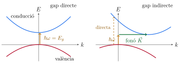
2.3 La mesura del gap: l'absorció òptica
La manera més directa de mesurar el gap és fer passar llum per una làmina del semiconductor i buscar la freqüència a partir de la qual s'absorbeix: per sota de \(E_g\), cap fotó no pot passar un electró de la banda de valència a la de conducció, i el cristall és transparent. Però en l'absorció s'han de conservar l'energia i el vector d'ona. Un fotó de \(1.11\) eV, el gap del silici, té un vector d'ona \(k=E/(\hbar c)=1.11\ \text{eV}/(1.973\times10^{-7}\ \text{eV\,m})=5.6\times10^{6}\) m\(^{-1}\), dues mil vegades més petit que la distància a la vora de la zona de Brillouin, de l'ordre de \(2\pi/a=1.16\times10^{10}\) m\(^{-1}\). A l'escala de l'espai \(\vec k\), l'absorció d'un fotó és una transició vertical.
En un semiconductor de gap directe, la transició vertical d'energia mínima va del màxim de la banda de valència al mínim de la de conducció, i l'absorció comença bruscament a \(\hbar\omega=E_g\). En un de gap indirecte, els dos extrems estan separats per un vector d'ona \(\vec k_c\) comparable al de la vora de la zona, que el fotó no pot aportar. La transició pot passar si, alhora, es crea o s'absorbeix un fonó de vector d'ona \(\vec K\simeq\vec k_c\), que porta el moment cristal·lí que falta (Tema 5). L'energia també s'ha de conservar, i el llindar d'absorció és \[\hbar\omega=E_g\pm\hbar\Omega ,\] on \(\hbar\Omega\) és l'energia del fonó, d'unes desenes de meV (fins a uns \(60\) meV al silici): el signe \(+\) correspon a crear-ne un i el \(-\), a absorbir-ne un que ja hi era, cosa que només passa si la temperatura és prou alta per tenir-ne. Un procés en què han de participar tres partícules és molt menys probable que un de dues, i entre el llindar indirecte i el directe l'absorció d'un semiconductor de gap indirecte és molt més feble que la d'un de gap directe. Per això una cèl·lula solar de silici ha de tenir un gruix de més d'un centenar de micres per absorbir la llum, mentre que una d'arsenur de gal·li en té prou amb unes poques.
El mateix argument val per a l'emissió de llum, quan un electró de la banda de conducció es recombina amb un estat buit de la de valència: és ràpida en un semiconductor de gap directe, i lenta i poc probable en un d'indirecte. Per això els LED no es fan de silici.
| Cristall | gap | \(E_g\) (0 K) | \(E_g\) (300 K) | \(\lambda_g\) (nm) | Cristall | gap | \(E_g\) (0 K) | \(E_g\) (300 K) | \(\lambda_g\) (nm) |
|---|---|---|---|---|---|---|---|---|---|
| Si | i | 1.17 | 1.11 | 1117 | InSb | d | 0.23 | 0.17 | 7290 |
| Ge | i | 0.744 | 0.66 | 1879 | InAs | d | 0.43 | 0.36 | 3440 |
| GaAs | d | 1.52 | 1.43 | 867 | InP | d | 1.42 | 1.27 | 976 |
| GaP | i | 2.32 | 2.25 | 551 | GaSb | d | 0.81 | 0.68 | 1820 |
| AlSb | i | 1.65 | 1.6 | 775 | CdS | d | 2.582 | 2.42 | 512 |
| CdSe | d | 1.840 | 1.74 | 713 | PbS | d | 0.286 | 0.34–0.37 | 3500 |
Gaps d'energia en eV de Kittel, taula 8.1 (\(i\), indirecte; \(d\), directe). La longitud d'ona del llindar d'absorció a \(300\) K, \(\lambda_g=hc/E_g=1239.8\ \text{nm}/E_g[\text{eV}]\), està calculada a partir del gap de la taula.
La taula mostra dues coses. La primera, que el gap baixa una mica en escalfar el cristall, entre \(0.05\) i \(0.16\) eV de \(0\) a \(300\) K: la dilatació i les vibracions de la xarxa canvien lleugerament el potencial periòdic (els calcogenurs de plom, com el PbS, són una excepció, i el seu gap creix). La segona, que la llum visible va de \(1.6\) a \(3.1\) eV (de \(780\) a \(400\) nm): el silici i el germani absorbeixen tot el visible, i el CdS, que només absorbeix el blau, és groc. Un fotodetector de silici funciona fins a \(1.1\ \mu\)m, i per a la llum de \(1.55\ \mu\)m de les fibres òptiques cal un gap més petit, com el del germani.
2.4 Les bandes del silici calculades
La figura mostra l'estructura de bandes del silici calculada amb la teoria del funcional de la densitat (DFT), en l'aproximació de densitat local, al llarg d'un camí de punts de simetria de la zona de Brillouin de la xarxa fcc (Tema 2). És el càlcul de la pràctica de bandes del curs, fet amb el programa Quantum ESPRESSO i representat aquí amb el zero d'energies al màxim de la banda de valència.
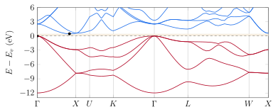
Si.pz-vbc) a la pràctica del curs. En vermell, les quatre bandes de valència, plenes; en blau, les quatre primeres de conducció. El màxim de la valència és a \(\Gamma\) i el mínim de la conducció, sobre la línia \(\Gamma X\), a un \(83\%\) del camí cap a \(X\): el gap és indirecte. La franja ombrejada és el gap del càlcul, \(0.46\) eV.El càlcul reprodueix el que hem descrit: tres bandes degenerades al màxim de la valència, a \(\Gamma\) (sense la interacció espín-òrbita, que el càlcul no inclou), i el mínim de la conducció sobre \(\Gamma X\), prop de \(X\). El gap directe a \(\Gamma\) és molt més gran, \(2.5\) eV. Les quatre bandes de valència allotgen exactament els vuit electrons (\(3s^2\,3p^2\)) dels dos àtoms de la cel·la primitiva.
3 Electrons i forats
3.1 El forat
Quan un electró passa de la banda de valència a la de conducció, deixa un estat buit en una banda gairebé plena. Descriure el corrent d'aquesta banda sumant les contribucions dels \(10^{23}\) electrons que hi queden seria molt incòmode. És molt més senzill descriure-la com una banda plena, que no porta corrent, més una sola partícula que representa l'estat buit. Aquesta partícula és el forat: el Tema 6 en va anunciar l'existència pel coeficient de Hall positiu de l'alumini i del beril·li, i el Tema 7 la va justificar. En recordem les propietats.
Considerem una banda plena de la qual traiem l'electró de l'estat \(\vec k_e\). La banda plena té vector d'ona total zero i corrent zero. Sense aquest electró, el vector d'ona total de la banda és \(-\vec k_e\), i el corrent és el d'una banda plena menys el de l'electró que falta: \(\vec j=0-(-e)\vec v(\vec k_e)=+e\,\vec v(\vec k_e)\). La banda es comporta com una partícula amb càrrega \(+e\) que es mou amb la velocitat que tindria l'electró que falta.
Amb aquestes regles, un forat en un camp elèctric s'accelera en el sentit del camp, com faria una càrrega positiva, i en un camp magnètic gira en sentit contrari als electrons. Les masses de la columna “banda de valència” de la taula anterior són masses de forats, i són positives.
4 Els portadors intrínsecs
Un semiconductor és intrínsec quan els seus portadors només venen de l'excitació tèrmica a través del gap: cada electró de la banda de conducció ha deixat un forat a la de valència, i \(n=p\). Per saber quants n'hi ha cal la densitat d'estats de cada banda i la funció de Fermi i Dirac.
4.1 Els electrons de la banda de conducció
Prop del mínim, la banda de conducció és la d'un electró lliure de massa \(m_e\) amb l'origen d'energies a \(E_c\). La densitat d'estats per unitat de volum és, doncs, la del Tema 6 amb aquests dos canvis, \[g_c(E)=\frac{1}{2\pi^2}\left(\frac{2m_e}{\hbar^2}\right)^{3/2}(E-E_c)^{1/2},\qquad E>E_c .\] La probabilitat que un estat d'energia \(E\) estigui ocupat és la funció de Fermi i Dirac, \(f(E)=1/(e^{(E-\mu)/k_BT}+1)\). El potencial químic \(\mu\), que en els semiconductors s'anomena gairebé sempre nivell de Fermi, és dins del gap, a una distància de les dues bandes molt més gran que \(k_BT\) (ho comprovarem més avall). Per a tots els estats de la banda de conducció, doncs, \(E-\mu\gg k_BT\), i la funció de Fermi i Dirac es redueix a la de Boltzmann, \(f(E)\simeq e^{-(E-\mu)/k_BT}\). És el gas no degenerat del Tema 6.
L'expressió de \(p\) surt de la mateixa manera. La probabilitat que un estat de la banda de valència estigui buit és \(1-f(E)=1/(e^{(\mu-E)/k_BT}+1)\simeq e^{-(\mu-E)/k_BT}\), perquè \(\mu-E\gg k_BT\) per a tots els estats de la banda de valència, i la densitat d'estats és \(g_v(E)\propto(E_v-E)^{1/2}\) amb la massa \(m_h\).
\(N_c\) és exactament la densitat quàntica \(n_Q\) del Tema 6, amb la massa efectiva en lloc de la de l'electró lliure: la densitat a la qual la distància entre portadors es fa comparable a la seva longitud d'ona tèrmica. L'equació (2) té una lectura molt senzilla: la banda de conducció es comporta com si tingués \(N_c\) estats per unitat de volum, tots a l'energia \(E_c\), ocupats cadascun amb la probabilitat de Boltzmann \(e^{-(E_c-\mu)/k_BT}\).
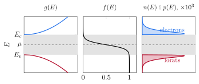
4.2 La llei d'acció de masses
Multiplicant les dues expressions de l'equació (2), el nivell de Fermi desapareix: \[np=N_cN_v\,e^{-(E_c-E_v)/k_BT}=N_cN_v\,e^{-E_g/k_BT}\equiv n_i^2 . \tag{4}\] El producte de les dues densitats només depèn de la temperatura i del material. Per obtenir-lo no hem fet servir enlloc que el semiconductor sigui pur: només que el nivell de Fermi sigui lluny de les dues bandes. Per tant, l'equació (4) també val quan el semiconductor té impureses, i és la que farem servir a la secció 5 per calcular la densitat de forats d'un material dopat amb donadors.
4.3 La concentració intrínseca
En un semiconductor intrínsec, \(n=p\), i per tant tots dos són iguals a l'arrel de l'equació (4).
Aquests valors s'han de prendre com a ordres de magnitud. Com que \(E_g\) és a l'exponent, un error de \(0.01\) eV al gap canvia \(n_i\) en un \(21\%\), i les masses de densitat d'estats, sobretot la dels forats, depenen de la temperatura. Kittel dona, a partir de mesures, \(n_i^2=2.10\times10^{19}\), \(2.89\times10^{26}\) i \(6.55\times10^{12}\) cm\(^{-6}\) per al Si, el Ge i el GaAs, és a dir, \(n_i=4.6\times10^9\), \(1.7\times10^{13}\) i \(2.6\times10^6\) cm\(^{-3}\). Per al silici, el valor que se sol fer servir en el disseny de dispositius és més alt, d'uns \(1.0\times10^{10}\) cm\(^{-3}\), i és el que farem servir en els exemples de la unió pn i el que fa servir el simulador.
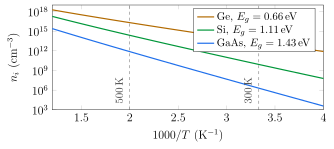
Prenent el logaritme de l'equació (5), \[\ln\left(n_iT^{-3/2}\right)=\text{constant}-\frac{E_g}{2k_B}\,\frac1T ,\] i el pendent de la recta dona el gap. Com que la conductivitat intrínseca és proporcional a \(n_i\) i la mobilitat només varia com una potència de \(T\), la resistència en funció de la temperatura és una segona manera, elèctrica, de mesurar el gap. Si el gap disminueix linealment amb la temperatura, \(E_g(T)\simeq E_g(0)-\alpha T\), el terme \(\alpha T\) només afegeix una constant multiplicativa, i el pendent dona el gap extrapolat a \(T=0\).
4.4 El nivell de Fermi intrínsec
Igualant les dues expressions de l'equació (2), \(N_ce^{-(E_c-\mu)/k_BT}=N_ve^{-(\mu-E_v)/k_BT}\), i aïllant \(\mu\), \[\mu_i=\frac{E_c+E_v}{2}+\frac{k_BT}{2}\ln\frac{N_v}{N_c}=E_v+\frac{E_g}{2}+\frac34\,k_BT\ln\frac{m_h}{m_e} . \tag{6}\] Si les dues masses fossin iguals, el nivell de Fermi intrínsec seria exactament al mig del gap. Si la banda de valència té més estats efectius, \(\mu\) s'ha d'acostar a la de conducció per compensar-ho, i al revés.
5 Els semiconductors dopats
5.1 Donadors i acceptors
El silici i el germani cristal·litzen en l'estructura del diamant del Tema 1: cada àtom té quatre veïns, amb els quals comparteix els seus quatre electrons de valència en quatre enllaços covalents. Si un àtom de silici se substitueix per un de fòsfor, d'arsènic o d'antimoni, del grup 15, la impuresa té cinc electrons de valència. Quatre fan els enllaços amb els veïns, com els del silici, i el cinquè sobra: queda lligat a l'ió P\(^+\) per l'atracció coulombiana, però molt feblement. Una mica d'energia tèrmica l'allibera, i passa a la banda de conducció. Una impuresa que dona un electró a la banda de conducció és un donador.
Si l'àtom que se substitueix és de bor, d'alumini, de gal·li o d'indi, del grup 13, la impuresa només té tres electrons, i a un dels quatre enllaços li'n falta un. Un electró d'un enllaç Si–Si veí hi pot saltar i completar-lo, i deixa un forat a la banda de valència; la impuresa queda carregada negativament, B\(^-\), i el forat hi queda lligat, també feblement. Una impuresa que accepta un electró de la banda de valència i hi deixa un forat és un acceptor.
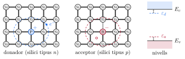
Un semiconductor amb més donadors que acceptors té més electrons que forats i és de tipus \(n\); un amb més acceptors, de tipus \(p\). Els portadors més abundants són els majoritaris i els altres, els minoritaris. Si un cristall té donadors i acceptors alhora, els electrons dels donadors cauen als acceptors, i només la diferència \(N_D-N_A\) aporta portadors: és la compensació.
5.2 El model hidrogenoide
L'electró sobrant d'un donador es mou en el camp coulombià d'una càrrega \(+e\), com l'electró d'un àtom d'hidrogen. Però hi ha dues diferències. Es mou dins d'un cristall, que es polaritza i apantalla la càrrega de l'ió: la força coulombiana es divideix per la constant dielèctrica relativa \(\varepsilon_r\) del semiconductor. I no és un electró lliure, sinó un electró de la banda de conducció, que respon a les forces amb la seva massa efectiva \(m_e\). El problema és el de l'àtom d'hidrogen amb dos canvis, \(e^2/4\pi\varepsilon_0\to e^2/4\pi\varepsilon_0\varepsilon_r\) i \(m\to m_e\).
La constant dielèctrica és la que més pesa, perquè hi entra al quadrat. En els semiconductors habituals (Si, Ge, III-V) és d'entre \(10\) i \(18\), i redueix l'energia d'ionització en un factor d'uns cent cinquanta respecte de l'hidrogen; la massa efectiva la redueix encara uns quants cops més.
| donadors, \(E_d\) (meV) | acceptors, \(E_a\) (meV) | |||||||
|---|---|---|---|---|---|---|---|---|
| Cristall | \(\varepsilon_r\) | P | As | Sb | B | Al | Ga | In |
| Si | 11.7 | 45 | 49 | 39 | 45 | 57 | 65 | 157 |
| Ge | 15.8 | 12.0 | 12.7 | 9.6 | 10.4 | 10.2 | 10.8 | 11.2 |
Constants dielèctriques estàtiques i energies d'ionització de les impureses del grup 15 (donadors) i del grup 13 (acceptors) del silici i del germani. Kittel, taules 8.4, 8.5 i 8.6. Al GaAs, \(\varepsilon_r=13.13\) i els donadors tenen \(E_d\approx6\) meV.
El model funciona millor com més gran és l'òrbita, ja que, per poder tractar el cristall com un medi continu amb una constant dielèctrica, l'òrbita ha d'abraçar molts àtoms: al GaAs, l'òrbita del donador conté uns dos-cents mil àtoms, i al silici, uns tres mil. Com més petita és, més temps passa l'electró a prop de l'ió concret, on el potencial ja no és el coulombià apantallat: per això el model no distingeix el fòsfor de l'arsènic. Per als acceptors, la degeneració de les bandes de forats complica el càlcul. El bor al silici, amb la massa dels forats pesants, \(0.52\,m\), dona \(E_a=13.606\times0.52/11.7^2=52\) meV, davant dels \(45\) meV mesurats.
Si la concentració d'impureses és prou alta, de l'ordre de \(10^{18}\) cm\(^{-3}\) o més al silici, les òrbites de donadors veïns se solapen i es forma una banda d'impureses, i el silici es comporta com un metall dolent. L'exercici 8.1 fa el càlcul de l'energia, del radi i de la concentració de solapament per a l'InSb, un semiconductor amb una massa efectiva molt petita.
5.3 La ionització tèrmica
Per saber quants donadors estan ionitzats a una temperatura donada, cal saber amb quina probabilitat el nivell \(\varepsilon_d\) està ocupat. No és la funció de Fermi i Dirac d'un estat normal, perquè un donador neutre pot tenir el seu electró amb l'espín amunt o avall, però no en pot tenir dos alhora: el segon electró notaria la repulsió del primer i no quedaria lligat.
La densitat d'electrons la fixa la neutralitat de càrrega: el cristall és neutre, i la càrrega dels electrons i dels acceptors ionitzats compensa la dels forats i dels donadors ionitzats, \[n+N_A^-=p+N_D^+ . \tag{8}\] Amb un sol tipus d'impureses, els donadors, i a temperatures prou baixes perquè els forats siguin negligibles, \(n=N_D^+\). Substituint-hi el nivell de Fermi que dona l'equació (2), \(e^{(\mu-\varepsilon_d)/k_BT}=(n/N_c)\,e^{E_d/k_BT}\), s'obté una equació de segon grau per a \(n\): \[n=\frac{N_D}{1+n/n_1},\qquad n_1=\frac{N_c}{2}\,e^{-E_d/k_BT}, \qquad\text{amb solució}\qquad n=\frac{n_1}{2}\left(\sqrt{1+\frac{4N_D}{n_1}}-1\right),\] on \(E_d=E_c-\varepsilon_d\) és l'energia d'ionització. Si \(n_1\gg N_D\), l'arrel es desenvolupa i \(n\simeq N_D\): tots els donadors estan ionitzats. Si \(n_1\ll N_D\), \[n\simeq\sqrt{n_1N_D}=\left(\frac{N_cN_D}{2}\right)^{1/2}e^{-E_d/2k_BT} : \tag{9}\] només una petita fracció dels donadors està ionitzada, i els electrons estan “congelats” als donadors. És la mateixa equació que la de la ionització tèrmica d'un gas d'hidrogen, i la mateixa meitat de l'energia a l'exponent que a la concentració intrínseca. Kittel (equació 53 del capítol 8) dona aquest resultat sense el factor \(2\) de l'espín, que només canvia \(n\) en un factor \(\sqrt2\). L'exercici 8.2 l'aplica a un semiconductor amb donadors molt superficials a \(4\) K.
5.4 Els tres règims de temperatura
A temperatures més altes, els electrons que venen de la banda de valència s'afegeixen als dels donadors. Si tots els donadors i acceptors estan ionitzats, la neutralitat (8) és \(n-p=N_D-N_A\), i amb la llei d'acció de masses, \(p=n_i^2/n\), \[n=\frac{N_D-N_A}{2}+\sqrt{\left(\frac{N_D-N_A}{2}\right)^2+n_i^2} . \tag{10}\] Quan \(n_i\ll N_D-N_A\), \(n\simeq N_D-N_A\) i \(p\simeq n_i^2/(N_D-N_A)\); quan \(n_i\gg N_D-N_A\), \(n\simeq p\simeq n_i\) i el semiconductor torna a ser intrínsec. La figura mostra el resultat de resoldre exactament la neutralitat, amb la ionització parcial dels donadors i els forats, per al silici dopat amb fòsfor.
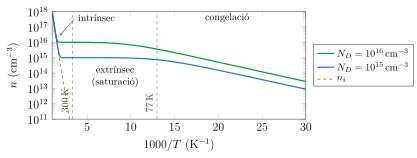
5.5 El nivell de Fermi d'un semiconductor dopat
En el règim extrínsec, \(n=N_D\) fixa el nivell de Fermi a través de l'equació (2): \[E_c-\mu=k_BT\ln\frac{N_c}{N_D}, \qquad\text{o bé}\qquad \mu-\mu_i=k_BT\ln\frac{n}{n_i} . \tag{11}\] La segona forma surt de dividir \(n=N_ce^{-(E_c-\mu)/k_BT}\) per \(n_i=N_ce^{-(E_c-\mu_i)/k_BT}\). En un material de tipus \(n\), el nivell de Fermi puja per sobre de \(\mu_i\), cap a la banda de conducció; en un de tipus \(p\), baixa cap a la de valència, amb \(\mu_i-\mu=k_BT\ln(p/n_i)\).
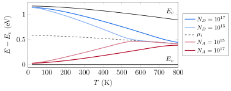
5.6 La mesura dels portadors: l'efecte Hall
El coeficient de Hall del Tema 6, \(R_H=1/nq\), és \(-1/ne\) en un semiconductor de tipus \(n\) i \(+1/pe\) en un de tipus \(p\): el signe de la tensió de Hall diu de quin tipus és la mostra, i el valor, quants portadors té. Amb la conductivitat, \(\sigma=ne\mu\) (secció 6), dona la mobilitat de Hall, \(\mu_H=|R_H|\sigma\). Mesurada en funció de la temperatura, dona \(n(T)\), i amb ella els tres règims, l'energia d'ionització de les impureses i el gap.
Quan hi ha electrons i forats alhora, en un semiconductor a prop del règim intrínsec, les dues contribucions al camp de Hall tenen signes oposats i es compensen parcialment. El resultat, que l'exercici 8.3 demana demostrar, és \[R_H=\frac1e\,\frac{p-nb^2}{(p+nb)^2},\qquad b=\frac{\mu_n}{\mu_p} .\] En un semiconductor intrínsec, \(n=p\), i el signe el decideix la mobilitat: com que al silici \(b=2.8\), el coeficient de Hall del silici pur és negatiu, encara que tingui tants forats com electrons.
6 Deriva i difusió
Els portadors d'un semiconductor es mouen per dues raons. Un camp elèctric els accelera i els fa derivar, com els electrons d'un metall al model de Drude del Tema 6. I, si la seva densitat no és uniforme, la seva agitació tèrmica els fa difondre cap a les regions on n'hi ha menys. En un metall la difusió no hi té cap paper, perquè la densitat d'electrons és pràcticament la mateixa a tot arreu; en un semiconductor, en canvi, la densitat de portadors pot canviar molts ordres de magnitud en una fracció de micra, i la difusió és tan important com la deriva. En tot aquest apartat farem servir un criteri únic per als signes: el signe entra només a través de la càrrega del portador, \(-e\) per als electrons i \(+e\) per als forats, i la mobilitat i el coeficient de difusió es defineixen sempre positius.
6.1 La mobilitat i la conductivitat
En un camp elèctric \(\vec E\), un portador de càrrega \(q\) i massa efectiva \(m^*\) adquireix, entre xoc i xoc, una velocitat mitjana de deriva \(\vec v_d=q\tau\vec E/m^*\), el mateix resultat que el model de Drude amb la massa efectiva. Com que el signe de \(q\) només fixa el sentit, és pràctic separar-lo.
La densitat de corrent de cada portador és la seva càrrega per la densitat i per la velocitat: \(\vec j_n=(-e)\,n\,(-\mu_n\vec E)=en\mu_n\vec E\) i \(\vec j_p=(+e)\,p\,(+\mu_p\vec E)=ep\mu_p\vec E\). Electrons i forats es mouen en sentits oposats, però porten càrregues oposades, i els seus corrents van en el mateix sentit i se sumen: \[\sigma=e\,(n\mu_n+p\mu_p) . \tag{12}\]
| Cristall | electrons | forats | Cristall | electrons | forats |
|---|---|---|---|---|---|
| Si | 1350 | 480 | InAs | 30000 | 450 |
| Ge | 3600 | 1800 | InP | 4500 | 100 |
| GaAs | 8000 | 300 | GaSb | 5000 | 1000 |
| AlAs | 280 | — | PbTe | 2500 | 1000 |
Mobilitats a temperatura ambient en cm\(^2\)/(V s), de Kittel, taula 8.3, per a mostres pures.
Les mobilitats dels forats són més petites que les dels electrons, sobretot perquè la degeneració de les bandes de valència a \(\Gamma\) permet que els xocs facin passar els forats d'una banda a l'altra. Els semiconductors amb masses efectives petites, com l'InAs, tenen mobilitats electròniques molt altes.
Amb l'equació (12) es poden comprovar les xifres de la introducció. El silici pur, amb \(n=p=1.0\times10^{10}\) cm\(^{-3}\), té \(\sigma=1.0\times10^{10}\times1.602\times10^{-19}\times(1350+480)=2.9\times10^{-6}\) S/cm, una resistivitat de \(3.4\times10^5\ \Omega\) cm (Kittel en dona \(2.6\times10^5\)); el germani pur, amb \(n_i=2.1\times10^{13}\) cm\(^{-3}\), uns \(55\ \Omega\) cm (Kittel, \(43\)). Amb \(10^{16}\) àtoms de fòsfor per cm\(^3\), un per cada cinc milions d'àtoms de silici, \(\sigma=10^{16}\times1.602\times10^{-19}\times1350=2.2\) S/cm i \(\rho=0.46\ \Omega\) cm, set-centes mil vegades menys que el silici pur.
Les mobilitats de la taula són les de mostres pures. Com en un metall (Tema 6), els xocs amb els fonons i amb les impureses se sumen segons la regla de Matthiessen, \(1/\mu=1/\mu_L+1/\mu_I\), però amb la velocitat tèrmica, en el model més senzill (fonons acústics i impureses ionitzades), les dependències són \(\mu_L\propto T^{-3/2}\) i \(\mu_I\propto T^{3/2}/N_I\) (les impureses ionitzades desvien més els portadors lents); al silici real, la dependència amb els fonons és una mica més forta. Al silici amb \(10^{17}\) impureses per cm\(^3\), la mobilitat dels electrons ja ha baixat a uns \(800\) cm\(^2\)/(V s). Als exemples farem servir, per simplicitat, les mobilitats del material pur. L'exercici 8.6 calcula els corrents de deriva d'electrons i de forats en una mostra de silici.
6.2 La difusió
Si la densitat de portadors no és uniforme, el moviment a l'atzar de cada portador produeix un flux net de les regions amb més densitat cap a les que en tenen menys, encara que no hi hagi cap força. És el mateix mecanisme que escampa una gota de tinta en un got d'aigua, i es descriu amb la llei de Fick: el flux de partícules és proporcional al gradient de densitat, \[\vec\Phi_n=-D_n\nabla n,\qquad \vec\Phi_p=-D_p\nabla p ,\] on \(D_n\) i \(D_p\) són els coeficients de difusió, positius. El corrent elèctric és el flux per la càrrega de cada portador: \[\vec j_n^{\,\text{dif}}=(-e)(-D_n\nabla n)=+eD_n\nabla n, \qquad \vec j_p^{\,\text{dif}}=(+e)(-D_p\nabla p)=-eD_p\nabla p .\] Electrons i forats que difonen en el mateix sentit porten corrents de sentits oposats.
El coeficient de difusió es pot estimar amb la teoria cinètica, com la conductivitat tèrmica dels fonons al Tema 5: en tres dimensions, \(D=\frac13v\ell\). Per als electrons del silici, amb la velocitat tèrmica i el recorregut lliure mitjà del càlcul anterior, \(D_n=\frac13\times2.3\times10^5\times4.6\times10^{-8}=3.5\times10^{-3}\) m\(^2\)/s \(=35\) cm\(^2\)/s. Com veurem de seguida, aquest número no és casual.
6.3 El potencial electrostàtic i les bandes
Si al semiconductor hi ha un potencial electrostàtic \(\psi(x)\) que varia amb la posició, l'energia potencial d'un electró a \(x\) és \(-e\psi(x)\), i tots els nivells d'energia dels electrons es desplacen aquesta quantitat. Les bandes es desplacen rígidament: \[E_c(x)=E_c^0-e\psi(x),\qquad E_v(x)=E_v^0-e\psi(x) .\] El gap i la curvatura de les bandes, i per tant les masses efectives, no canvien; el que canvia és la posició de les bandes en cada punt. Un camp elèctric uniforme, \(E=-d\psi/dx\), es veu al diagrama de bandes com unes bandes inclinades amb pendent \(dE_c/dx=eE\).
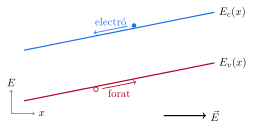
6.4 La relació d'Einstein
Considerem un semiconductor no degenerat en equilibri tèrmic, amb un potencial electrostàtic \(\psi(x)\) que varia amb la posició, sense preguntar-nos encara d'on surt. En equilibri, el nivell de Fermi \(\mu\) és el mateix a tot el cristall (si no ho fos, els electrons es mourien cap a on és més baix, com l'aigua entre dos vasos comunicants), i l'equació (2) dona, en cada punt, \[n(x)=N_c\,e^{-(E_c(x)-\mu)/k_BT}=N_c\,e^{-(E_c^0-\mu)/k_BT}\,e^{e\psi(x)/k_BT} .\] Els electrons s'acumulen on el potencial és més alt, que és on la seva energia és més baixa. És una distribució d'equilibri de Boltzmann, que hem obtingut sense dir res de cap mecanisme de transport. Derivant-la, \[\frac{dn}{dx}=\frac{e}{k_BT}\,n\,\frac{d\psi}{dx}=-\frac{e}{k_BT}\,n\,E .\] Un camp en equilibri implica un gradient de densitat. Però en equilibri tampoc no hi pot haver corrent d'electrons, i l'equació (13) ha de donar \(j_n=0\): \[0=en\mu_nE+eD_n\frac{dn}{dx}=enE\left(\mu_n-\frac{e}{k_BT}D_n\right).\] Això ha de valer per a qualsevol camp i qualsevol densitat, i per tant el parèntesi és zero. El mateix raonament amb els forats dona el mateix resultat.
6.5 Un semiconductor amb un dopatge no uniforme
Considerem ara un semiconductor de tipus \(n\) en què la concentració de donadors varia amb la posició, \(N_D(x)\). Si les bandes fossin planes, la densitat d'electrons seguiria el dopatge, \(n(x)=N_D(x)\), i el nivell de Fermi local, \(E_c-k_BT\ln(N_c/N_D(x))\), canviaria d'un punt a un altre. Aquesta situació no pot ser d'equilibri: els electrons difondrien de les regions amb més donadors cap a les que en tenen menys. Però en moure's deixen enrere els donadors ionitzats, positius, i s'acumulen on n'hi ha menys: es crea una separació de càrrega, i amb ella un camp elèctric que frena la difusió. L'equilibri s'assoleix quan el camp és exactament el que cal perquè la deriva compensi la difusió en cada punt, \(j_n=0\): \[E(x)=-\frac{D_n}{\mu_n}\,\frac1n\frac{dn}{dx}=-\frac{k_BT}{e}\,\frac{d}{dx}\ln n(x) . \tag{15}\] Per als forats, amb \(j_p=0\), \(E=+(k_BT/e)\,d\ln p/dx\), que és el mateix camp, perquè \(np=n_i^2\) fa que \(\ln p=2\ln n_i-\ln n\).
En llenguatge de bandes, abans d'arribar a l'equilibri les bandes eren planes i el que variava era el nivell de Fermi; després, el nivell de Fermi és pla i el que varia són les bandes. La diferència d'energia de Fermi entre dues regions s'ha convertit en una diferència de potencial: integrant l'equació (15) entre dues regions amb densitats \(n_1\) i \(n_2\), \[\psi_2-\psi_1=\frac{k_BT}{e}\ln\frac{n_2}{n_1} .\] Aquesta diferència de potencial existeix sense que hi passi cap corrent.
6.6 Portadors en excés i longitud de difusió
Fins ara hem considerat situacions d'equilibri. Si s'il·lumina un semiconductor amb fotons d'energia superior al gap, o s'hi injecten portadors a través d'un contacte, apareixen electrons i forats en excés, i el producte \(np\) supera \(n_i^2\). El sistema tendeix a tornar a l'equilibri per recombinació: en un material de tipus \(n\), un excés de forats \(\Delta p=p-p_0\) petit comparat amb la densitat d'electrons desapareix a un ritme \(\Delta p/\tau_p\), on \(\tau_p\) és el temps de vida dels portadors minoritaris.
Al silici, on la recombinació directa és lenta perquè el gap és indirecte, el temps de vida el limiten els defectes i les impureses profundes, i va de nanosegons a mil·lisegons segons la puresa del cristall. Amb \(\tau=1\ \mu\)s, \(L_p=\sqrt{12.4\ \text{cm}^2/\text{s}\times10^{-6}\ \text{s}}=35\ \mu\)m per als forats, i \(L_n=59\ \mu\)m per als electrons. Al GaAs, de gap directe, la recombinació radiativa fa que el temps de vida sigui de l'ordre de nanosegons; amb \(\tau=10\) ns i \(D_n=207\) cm\(^2\)/s, \(L_n=14\ \mu\)m. Les longituds de difusió són molt més grans que les distàncies en què canvia el dopatge en un dispositiu, i són les que fixaran el corrent d'un díode.
7 La unió pn
7.1 La unió en equilibri
Una unió pn és un sol cristall amb una regió de tipus \(p\) i una de tipus \(n\) en contacte. Considerarem el cas més senzill, una unió abrupta: la regió \(x<0\) té una concentració uniforme d'acceptors \(N_A\) i la regió \(x>0\), una concentració uniforme de donadors \(N_D\), tots ionitzats.
Imaginem que les dues regions es posen en contacte de sobte. A la regió \(n\) hi ha molts electrons i a la \(p\) molt pocs, i amb els forats passa al revés. Els electrons difonen cap a la regió \(p\) i els forats cap a la \(n\), i en arribar-hi es recombinen amb els majoritaris de l'altre costat. Al voltant de la unió desapareixen els portadors mòbils, i hi queden les càrregues fixes de les impureses ionitzades: negatives (N\(_A^-\)) al costat \(p\) i positives (N\(_D^+\)) al costat \(n\). Aquesta doble capa de càrrega crea un camp elèctric dirigit de la regió \(n\) cap a la \(p\), que frena la difusió dels majoritaris i arrossega en sentit contrari els minoritaris que s'hi acosten. En equilibri, la deriva i la difusió de cada portador es compensen, \(j_n=j_p=0\), i el nivell de Fermi és el mateix a tot el cristall: és el cas extrem del dopatge no uniforme de la secció anterior.
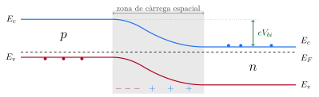
7.2 El potencial de contacte
La diferència de potencial electrostàtic entre les dues regions neutres, lluny de la unió, és el potencial de contacte o potencial intern, \(V_{bi}\) (de l'anglès built-in). Es pot calcular sense saber res del que passa a la unió, només amb la condició que el nivell de Fermi sigui el mateix als dos costats.
7.3 La zona de càrrega espacial
Per calcular com es distribueix el potencial dins de la unió farem l'aproximació de buidatge: suposarem que hi ha una regió, la zona de càrrega espacial o de buidatge, entre \(x=-x_p\) i \(x=x_n\), on no hi ha cap portador mòbil, i que fora d'ella el semiconductor és neutre. La densitat de càrrega és, doncs, \[\rho(x)=\begin{cases} -eN_A, & -x_p<x<0,\\[2pt] +eN_D, & 0<x<x_n,\\[2pt] 0, & x<-x_p\ \text{o}\ x>x_n . \end{cases}\] L'aproximació és raonable perquè, a la zona de càrrega espacial, la barrera de potencial és de moltes vegades \(k_BT/e\), i la densitat de portadors cau amb el factor de Boltzmann en una distància molt curta: la transició entre la regió neutra i la buida té una amplada de l'ordre de la longitud de Debye, \(L_D=\sqrt{\varepsilon_sk_BT/e^2N}\), que per a \(N=5\times10^{16}\) cm\(^{-3}\) al silici és de \(18\) nm.
La figura mostra els cinc perfils d'aquesta mateixa unió, calculats amb el simulador del tema.
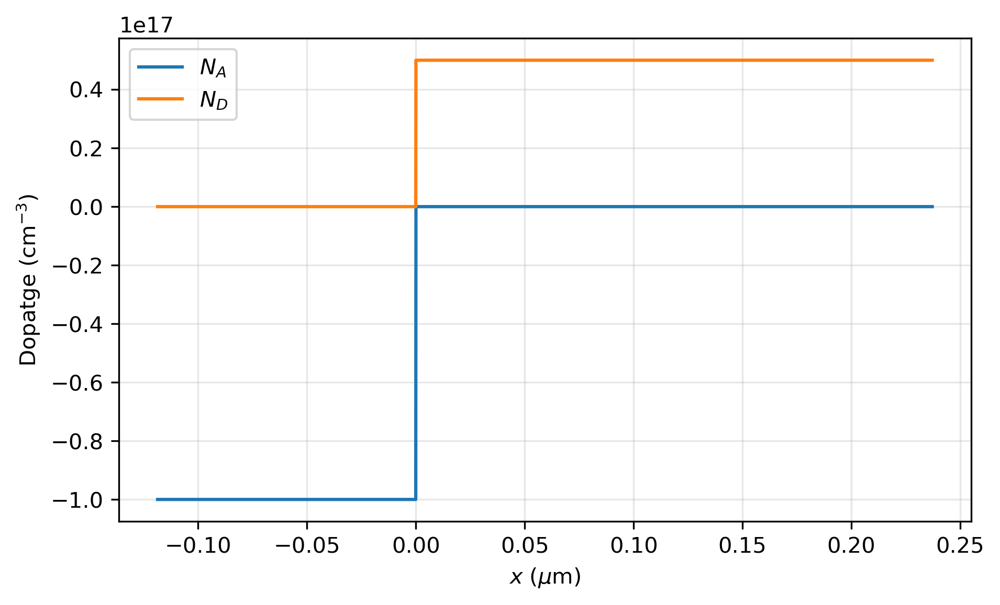
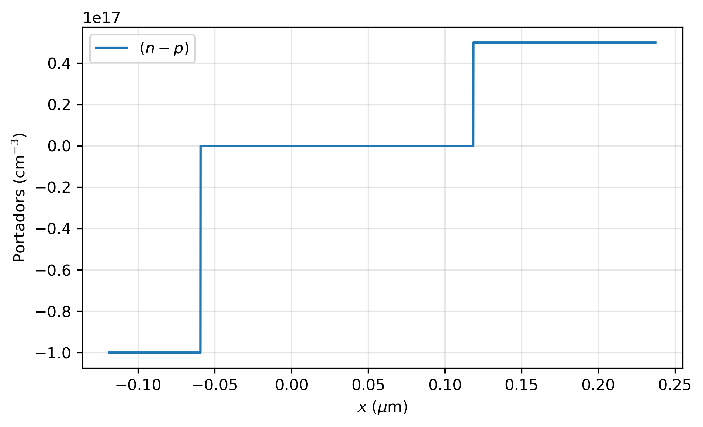
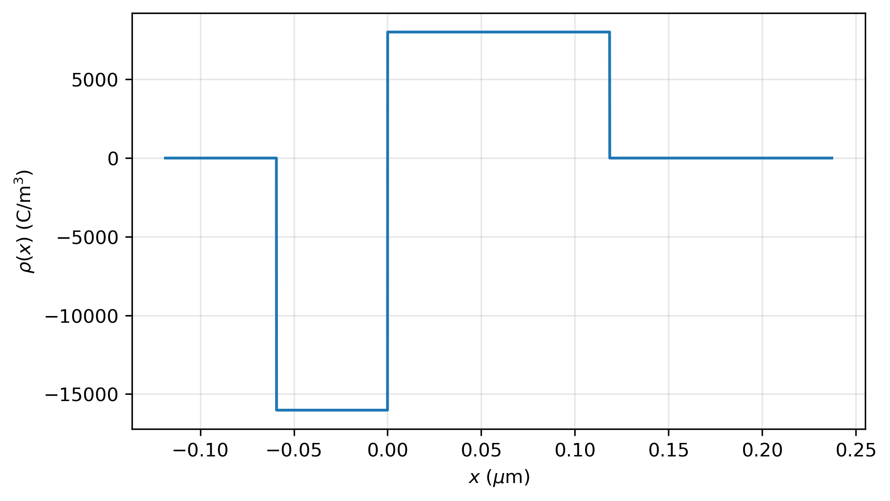
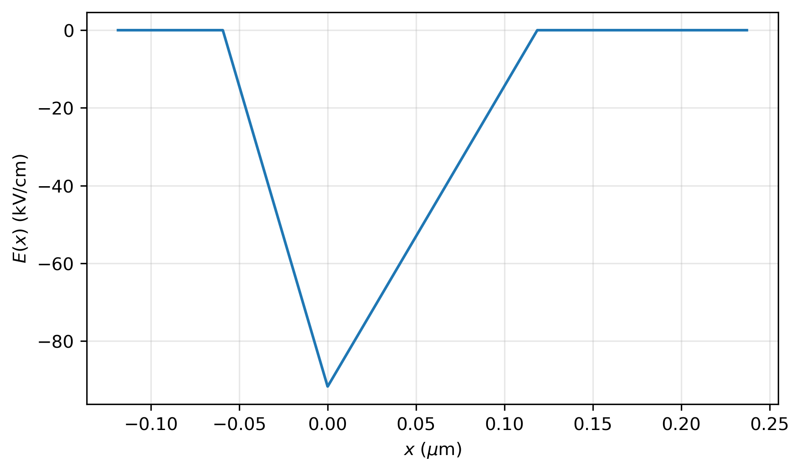
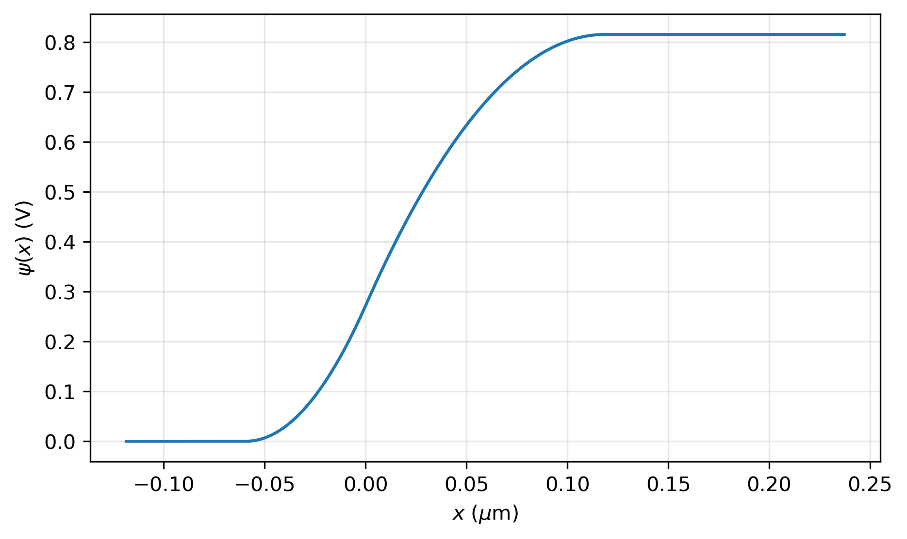
7.4 Polarització directa i inversa
Si es connecta una font de tensió \(V\) a la unió, amb el pol positiu al costat \(p\), gairebé tota la tensió cau a la zona de càrrega espacial, que és la regió sense portadors i, per tant, la de més resistència. La tensió aplicada es resta del potencial de contacte: la barrera que veuen els electrons del costat \(n\) passa de \(eV_{bi}\) a \(e(V_{bi}-V)\). Amb \(V>0\), la polarització directa, la barrera baixa; amb \(V<0\), la polarització inversa, puja. La unió ja no és en equilibri, i el nivell de Fermi deixa de ser el mateix als dos costats: el del costat \(n\) queda \(eV\) per sobre del del costat \(p\).
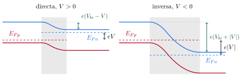
Tot el que hem calculat amb l'equació de Poisson continua valent si es canvia \(V_{bi}\) per \(V_{bi}-V\): \[W(V)=\sqrt{\frac{2\varepsilon_s}{e}\,\frac{N_A+N_D}{N_AN_D}\,(V_{bi}-V)} . \tag{18}\]
Si la polarització inversa és prou gran perquè el camp màxim arribi a uns quants centenars de kV/cm, els portadors que travessen la unió guanyen prou energia per ionitzar àtoms i crear nous parells electró-forat, que també s'acceleren: és la ruptura per allau, i el corrent invers creix bruscament. L'exercici 8.5 calcula el camp màxim i l'amplada d'una unió de germani amb \(-20\) V.
7.5 L'equació del díode
Per què la unió deixa passar el corrent en un sentit i no en l'altre? En equilibri, cada segon alguns electrons del costat \(n\), els de la cua de la distribució de Boltzmann, tenen prou energia per superar la barrera i passar al costat \(p\); i alguns electrons del costat \(p\), els minoritaris, arriben a la zona de càrrega espacial i el camp els arrossega cap al costat \(n\). Els dos fluxos són iguals, i el corrent net és zero. En polaritzar la unió, el segon flux no canvia, perquè no depèn de l'alçada de la barrera (tot minoritari que arriba a la vora hi cau), però el primer és proporcional a \(e^{-e(V_{bi}-V)/k_BT}\) i, per tant, a \(e^{eV/k_BT}\). El corrent net és proporcional a \(e^{eV/k_BT}-1\).
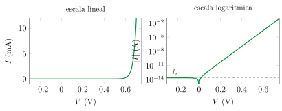
La mateixa unió és la base del LED, on els portadors injectats es recombinen emetent llum (cal un gap directe), i de la cèl·lula solar, on el camp de la zona de càrrega espacial separa els parells creats per la llum i afegeix un corrent fotogenerat invers, \(I=I_s(e^{eV/k_BT}-1)-I_L\).